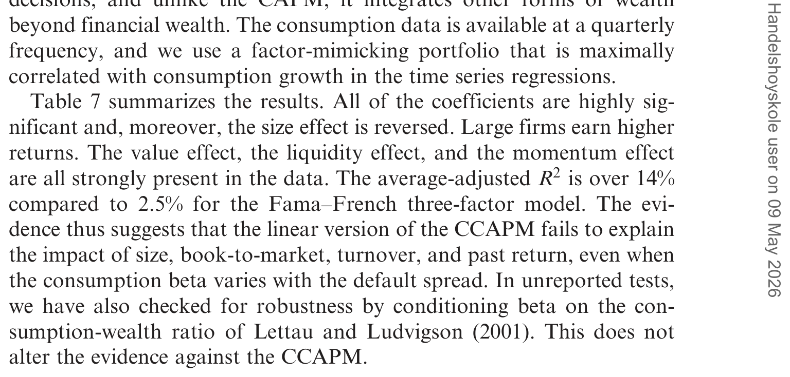
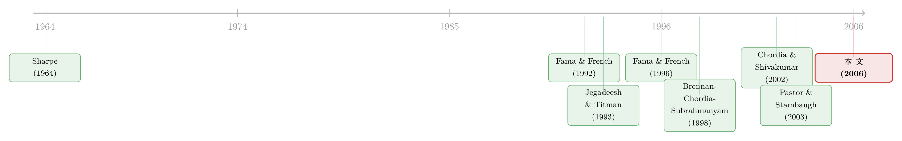

会「看天」的 beta：当风险收编了价值与规模，动量却躲进了商业周期
本文读的是 Avramov & Chordia (2006, Review of Financial Studies)：把资产定价检验从「组合」搬回「个股」，并让每只股票的 beta 随公司规模、账面市值比以及商业周期一起摆动。结论很干脆——beta 固定不动时，规模、价值、动量、换手率四个异象一个都解释不了；一旦让 beta「会看天」，规模和价值常常被风险收编，但动量岿然不动；而真正的反转在最后：当模型的「定价误差」也被允许随商业周期变化时，动量竟也变得不显著了。唯有换手率（流动性）始终是个不肯低头的「钉子户」。
1 一个缠了三十年的老问题
先把张力摆出来。
CAPM 告诉我们，一只股票的预期收益只该由它对市场的 beta 决定。可从 Basu (1977) 的市盈率、Banz (1981) 的小盘股、Jegadeesh (1990) 的反转，一直到 Fama and French (1992) 那篇集大成的「横截面」，人们一次次发现：真正能预测平均收益的，是公司的市值、账面市值比 (book-to-market)、还有过去的收益，而不是 beta。这些「该无效却有效」的变量，被统称为市场异象 (anomalies)。
于是金融学被劈成两半。一派说，这些不过是 CAPM 漏掉的风险——只要换个更好的风险模型，异象就该消失；Fama and French (1993, 1996) 的三因子模型正是这条路的旗帜，它几乎收编了所有异象，唯独拿动量没办法。另一派则说，这些是公司「特征」本身在定价，是市场无效率的证据；Daniel and Titman (1997) 直接论证：起作用的是规模和账面市值比这两个特征，而不是股票在 SMB、HML 上的载荷。
争了三十年，谁也没说服谁。这篇 2006 年的论文，没有再造一个新因子，而是回头追问了一个被大家忽略的问题：我们检验这些模型的方式，本身是不是就有毛病？
2 两个被默认、却很可疑的前提
Avramov 和 Chordia 盯上了主流检验里两个被当作理所当然的做法。
第一，把股票塞进组合。 经典做法是把几千只股票按规模、账面市值比分成 25 个或 100 个组合，再拿组合去检验模型。可 Lo and MacKinlay (1990) 早就警告过，这种「先分组再检验」会带来数据窥探偏差 (data-snooping bias)；Litzenberger and Ramaswamy (1979) 也指出，把个股压成组合会损失大量信息。换一种分组方式，结论可能就翻盘。
第二，假设 beta 是个常数。 CAPM 失灵，很大程度上要怪它的「静态」——它假定风险敞口一成不变。可 Hansen and Richard (1987) 证明过：哪怕静态 CAPM 被拒绝，它的动态版本完全可能是对的。更进一步，Gomes, Kogan, and Zhang（下称 GKZ）(2003) 用一个一般均衡模型说明，公司的规模与账面市值比，本来就应该和它的市场 beta 相关：规模捕捉的是企业「增长期权」带来的系统性风险，账面市值比则是「在手项目」风险的代理。
把这两点合起来，一个自然的问题浮现了：如果我们既不分组、又允许每只个股的 beta 随公司特征和商业周期一起变化，那些异象还在吗？
这正是全文的核心。接下来要做的，就是把这个想法翻译成一套可检验的计量框架。
3 识别策略：用「风险调整后收益」做一场审判
论文的方法论脱胎于 Brennan, Chordia, and Subrahmanyam (1998)（下称 BCS）。它的精妙之处，在于检验的因变量——不是收益，而是风险调整后的收益。
设想收益由一个条件 K 因子模型生成：
$$R_{jt} = E_{t-1}(R_{jt}) + \sum_{k=1}^{K} \beta_{jkt-1} f_{kt} + e_{jt}$$
而预期收益遵循「精确定价 (exact pricing)」：
$$E_{t-1}(R_{jt}) - R_{Ft} = \sum_{k=1}^{K} \lambda_{kt-1}\, \beta_{jkt-1}$$
把这两式合在一起，就能为每只股票、每个月算出一个风险调整后收益：
$$R^{*}_{jt} \equiv R_{jt} - R_{Ft} - \sum_{k=1}^{K} \hat{\beta}_{jkt-1} F_{kt}$$
直觉是：从原始超额收益里，把「该由风险因子解释掉」的那一部分扣干净，剩下的 \(R^{*}_{jt}\) 就是模型解释不了的残差。然后跑第二步的横截面回归：
$$R^{*}_{jt} = c_{0t} + \sum_{m=1}^{M} c_{mt} Z_{mjt-1} + e_{jt}$$
这里 \(Z\) 是公司特征——规模、账面市值比、换手率、各种滞后收益。关键在于那个零假设：如果模型是对的（精确定价成立），那么风险已经被扣干净了，公司特征就不该再能预测 \(R^{*}\)，也就是所有 \(c_{mt}\) 都应当不显著。一旦它们显著，模型就被推翻。
为什么这个检验有「牙齿」？Jagannathan and Wang (1998) 证明过一个很漂亮的结果：当 beta 定价模型被设定错了，特征变量系数的 t 统计量会依概率发散到无穷。换句话说，模型错得越离谱，特征就显得越「显著」。所以特征是否显著，恰好是模型是否成立的一面照妖镜。
用风险调整后收益（而非原始收益）做回归，这一手法来自 Shanken (1992)，目的是治理第一步估计 beta 带来的「变量误差 (errors-in-variables)」偏差。相应地，标准误也要修正——论文同时实现了 Shanken (1992) 和 Jagannathan and Wang (1998) 两套修正，并发现后者给出的 t 值（绝对值）通常更大、更保守。
（关于「让 beta 动起来」这件事被低估了多久，可参见《时变的 beta，被低估了二十年的风险》。）
4 让 beta「会看天」：核心设定
整篇文章最有辨识度的一步，是给 beta 写下了这样一个设定（以单因子 CAPM、单一宏观预测变量 \(z_{t-1}\) 为例）：
对应到第一步的时间序列回归，完整设定就是把上式代进去、两边乘以市场超额收益 \(r_{mt}\)：
$$r_{jt} = \alpha_j + \beta_{j1} r_{mt} + \beta_{j2} z_{t-1} r_{mt} + \beta_{j3} Size_{j,t-1} r_{mt} + \beta_{j4} z_{t-1} Size_{j,t-1} r_{mt} + \beta_{j5} BM_{j,t-1} r_{mt} + \beta_{j6} z_{t-1} BM_{j,t-1} r_{mt} + u_{jt}$$
注意：公司特征和宏观预测变量都滞后一期，避免「用未来看现在」。论文用了四种 beta 设定层层递进——(0) 无条件版（除 \(\beta_{j1}\) 外全为零）；(i) 只让 beta 随公司特征变（\(\beta_{j2}=\beta_{j4}=\beta_{j6}=0\)）；(ii) 只让 beta 随宏观变量变（\(\beta_{j3}=\beta_{j4}=\beta_{j5}=\beta_{j6}=0\)）；(iii) 全部放开。
这套设定和 Shanken (1990)、Ferson and Harvey (1999)、Lettau and Ludvigson (2001) 的「scaling」乍看相似，其实有本质区别。后者用预定变量去缩放因子载荷，结果一个条件单因子 CAPM 可以被改写成一个无条件多因子模型。而这里因为 \(Size_j\)、\(BM_j\) 是公司层面、各股不同的，乘出来的量不构成全市场共同的额外风险因子——所以它没有那个「无条件多因子」的解读。这正是「用个股」才能做到的事。
5 数据与登场的模型
样本是 1964 年 8 月到 2001 年 12 月、NYSE/AMEX/NASDAQ 共 7875 只股票。观测单位是「个股 × 月」，而不是组合。
检验的模型阵容很丰富：(i) CAPM；(ii) Fama–French 三因子；(iii) 三因子 + Pastor–Stambaugh (2003) 流动性因子；(iv) 三因子 + 动量组合 WML（赢家减输家）；(v) Jagannathan and Wang (1996) 的版本，用市场超额收益与劳动收入增长当因子；(vi) Rubinstein (1976)–Lucas (1978)–Breeden (1979) 的线性消费 CAPM（CCAPM）；(vii) 三因子 + 流动性 + 动量。每个模型都有无条件与条件两个版本。
6 主要结果：三道关卡，逐一闯过
第一道关卡——固定 beta。 干净利落：无论 (C)CAPM 还是三因子，只要 beta 不动，规模、账面市值比、换手率、过去收益四个特征在横截面回归里都高度显著。也就是说，静态模型一个异象都收不住。这与三十年的文献完全一致。
第二道关卡——让 beta 看天。 反转出现了。当 beta 被允许随公司特征和商业周期变化，规模与价值效应常常被解释掉了——条件版三因子模型在捕捉规模和账面市值比上，相对 CAPM 改进最大。这一结果直接呼应了那场「风险还是特征」之争：既然时变 beta 版的三因子能吃掉规模和价值的预测力，那就给「风险派」加了一分——它们终究更像风险，而非纯粹的特征定价。
但 beta 会动不等于万灵药。Ghysels (1998) 提醒过：如果 beta 的动态被刻画对了，时变模型当然胜过固定模型；可一旦 beta 被设定错了，带来的定价误差甚至可能比固定 beta 更大。我们永远无法知道 beta 的「真实」动态——论文的贡献在于，它论证了「用经济理论（规模、账面市值比、商业周期）来指导 beta 的建模」是一条可行的路。
动量，纹丝不动。 即便规模和价值被收编，过去收益的预测力依旧稳健——哪怕把流动性因子、WML 组合，或两者一起塞进第一步回归，都拿动量没办法。这与 Fama and French (1996)「三因子收得住一切、唯独收不住动量」的老结论一脉相承。（动量在全球的顽固，亦可参见《全世界都有「价值」和「动量」，只有日本是个例外》。）
如表 7 所示，把各模型、各设定下特征变量的横截面系数汇总在一起，这条「规模价值低头、动量与换手率坚挺」的脉络一目了然。

Table 7: summarizes the results. All of the coefficients are highly sig-
第三道关卡——让「定价误差」也看天。 这是全文最漂亮的一招。前面让 beta 随商业周期变，动量没死；那么，如果连模型的定价误差（alpha）本身也被允许随商业周期变量变化呢？ 论文发现：当横截面回归的因变量改成「风险调整后收益 减去 alpha 的时变成分」，过去收益的系数就变得不显著了。
换句话说，动量的收益里藏着一条商业周期的纹路。这一点意义重大——动量长期以来「抗拒理性解释」，催生了一大堆基于投资者认知偏差的行为模型。而这里的证据提示：现在就抛弃风险解释，或许为时尚早；也许存在一个尚未被发现、与商业周期相关的风险因子，能够解释动量。这正是 Chordia and Shivakumar (2002) 那条线索的延续。
换手率：唯一的钉子户。 与动量形成鲜明对照，换手率（流动性）的系数即便扣掉了 alpha 的时变成分，依然高度显著。流动性对平均收益的影响，不随商业周期消退。作者由此推断：流动性更像一种交易层面的现象，与宏观经济状态关系不大，它取决于市场设计、流动性供给者之间的竞争、以及信息不对称的程度。
一个诚实的注脚：论文用换手率衡量的是流动性的水平，而 Pastor–Stambaugh 因子捕捉的是流动性风险；作者也承认，换上另一种流动性因子的代理，结论或许会变。不过他们补充道，即便把流动性因子构造成「高换手减低换手」的收益差，换手率效应依旧稳健。
7 文献脉络
把这条线索捋一遍，能更清楚地看到这篇论文站在哪里。
源头是 Sharpe (1964) 与 Lintner (1965) 的 CAPM。随后 Fama and French (1992) 用横截面回归揭示规模与账面市值比的预测力，(1993, 1996) 又用三因子模型把绝大多数异象收编进一个「风险」框架——唯独 Jegadeesh and Titman (1993) 发现的动量（买赢家卖输家，月均约 1% 的超额收益）成了三因子模型的克星。
与此同时，另一条「条件化」的支流在生长：Jagannathan and Wang (1996) 的条件 CAPM、Ferson and Harvey (1999) 的因子缩放，都在让风险敞口随信息变化；而 Chordia and Shivakumar (2002) 直接指出动量收益有商业周期成分。流动性这一支则由 Amihud and Mendelson (1986) 开启，经 Chordia, Roll, and Subrahmanyam (2000) 的「流动性共同性」，到 Pastor and Stambaugh (2003) 提炼出流动性因子（最高敏感度十分位组合年化超出最低十分位 7.5%）。

Avramov and Chordia (2006) 的位置，正是把 BCS (1998) 的「个股 + 风险调整后收益」检验框架，嫁接到「条件 beta」与「条件 alpha」这两条支流上——用一套统一的设计，同时审判规模、价值、动量、流动性四个异象。它的答案是分层的：风险（时变 beta）解释了规模与价值；商业周期（时变 alpha）解释了动量；而流动性，谁也解释不了。
（关于「异象到底是不是风险」这个母题的另一种近期回答，可对照《不需要那些「玄学风险」：当价值、动量、规模的超额收益，全被分析师的预期错误吃掉》。）
8 评论与延伸（Q&A + 研究方向）
(a) 几个可能的疑问
Q：用「风险调整后收益」当因变量，和传统的 Fama–MacBeth 两步法到底差在哪？
传统两步法里，第二步通常把原始（或超额）收益回归到 beta 估计值上，去估风险溢价；这里则反过来，先用第一步估出的时变 beta 把因子贡献从收益里扣干净，得到 \(R^{*}\)，再看公司特征能否预测这个残差。前者问「风险的价格是多少」，后者问「扣掉风险之后，特征还重不重要」。后一种设定更直接地对应「精确定价」的零假设，也借 Shanken (1992) 缓解了 beta 估计误差的传染。
Q：第一步时间序列回归用了全样本（含未来数据）估 beta，这不算「偷看未来」吗？
严格说是用了前视信息。但作者援引 Fama and French (1992) 的结论——这种前视对结果几乎没有影响——并自己抽查了若干随机样本加以确认。这是个值得记住的 caveat，但不是致命伤。
Q：既然时变 beta 能解释规模和价值，是不是就证明了「风险派」赢了？
没那么绝对。Ghysels (1998) 的警告仍然成立：beta 一旦被设定错，定价误差可能更大，而 beta 的真实动态无人知晓。论文的措辞很克制——它说的是「经济理论可以指导 beta 建模」，并且这种建模「显著改善了几乎所有模型的定价能力」，而非宣称找到了 beta 的真身。
Q：「动量被时变 alpha 解释掉」算不算一种循环论证——把解释不了的都丢给会动的 alpha？
这是最该警惕的一点。让 alpha 随商业周期变，确实增加了自由度，几乎总能「吸收」掉一些预测力。论文的辩护是：被吸收的恰恰是动量，而换手率在同样的处理下纹丝不动。如果只是机械地增加自由度，两者应当一起变弱才对。这种「差别化」的结果，让「动量有商业周期成分」的解读更可信，但它仍是关联证据，而非找到了那个具体的风险因子。
Q：为什么换手率扛得住，动量扛不住？这背后的经济直觉是什么？
作者的解读是：动量收益与宏观状态（经济扩张/衰退）系统性地相关，所以一旦把 alpha 的商业周期成分剥离，它就「现形」为某种周期性风险补偿；而流动性更像市场微观结构层面的摩擦——做市商竞争、信息不对称、交易机制——与经济周期无关，因此无论怎么调宏观条件，它都不消失。
Q：用个股而非组合，代价是什么？
收益是避开了分组的数据窥探与信息损失（Lo and MacKinlay 1990；Litzenberger and Ramaswamy 1979）。代价是个股 beta 的估计噪声大得多——这正是为什么必须用风险调整后收益 + Shanken / Jagannathan–Wang 标准误修正来「兜底」。能不能兜干净，是这套方法可信度的关键。
(b) 几个可能的研究问题与提案
1. 把这套「条件 beta + 条件 alpha」框架搬到公司债横截面。
【经济故事】公司债同样有规模、信用、动量、流动性等异象，而信用利差对商业周期的敏感度远高于股票——「让 beta 与 alpha 看天」的逻辑在债市可能更有戏。换手率作为「纯交易现象」的结论，在以做市商为中心、OTC 交易的债市里是否依然成立，尤其值得一问。 【可行性】中。数据可用 TRACE 成交 + Mergent FISD，宏观状态用 NBER 衰退、违约利差等。难点是个券交易稀疏、beta 估计噪声更大，需要审慎处理流动性度量与标准误。
2. 流动性效应是否随「外资持有比例」变化？
【经济故事】如果换手率反映的是市场设计与信息不对称，那么外资持有人结构（信息劣势、交易行为不同）应当系统性地改变流动性的定价。把外资持有份额作为横截面交互项加进第二步回归，可检验「流动性是不是纯交易现象」这一论断的边界。 【可行性】中。需 13F/国别持有数据匹配个券或个股，识别上可借助指数纳入等准自然实验来缓解内生性。
3. 那个「与商业周期相关、能解释动量」的风险因子，到底长什么样？
【经济故事】论文留了个悬念——存在一个尚未被发现、与商业周期相关的因子。用现代机器学习从宏观状态变量里「搜」出这样一个因子，并检验它能否在个股层面收编动量，是对这条线索的直接续写。 【可行性】中到低。方法上可借鉴横截面收缩与因子构造（见《压缩横截面：因子动物园的尽头，不是更少的因子，而是更聪明的收缩》），但「事后搜出来的因子」极易过拟合，样本外验证与经济解释是硬约束。
4. 用更长、更现代的样本重做一遍：2001 年之后，结论还稳吗？
【经济故事】本文样本止于 2001 年。此后动量经历了 2009 年的「动量崩盘」，流动性在 2008、2020 两次危机里剧烈波动。把框架延伸到 2024 年，检验「时变 beta 收编规模价值、时变 alpha 收编动量、换手率坚挺」这三条结论的时间稳定性，本身就很有价值。 【可行性】高。数据（CRSP/Compustat）现成，方法照搬即可，是一篇干净的复制 + 延伸。
9 我的判断
这篇论文的贡献，不在于发明新因子，而在于把检验本身做「干净」了：用个股回避分组偏差，用风险调整后收益与 Shanken / Jagannathan–Wang 修正压住估计误差，再让 beta 和 alpha 分别随公司特征与商业周期「呼吸」。它给出的分层答案——规模价值是风险、动量是周期、流动性是交易——既调和了「风险 vs 特征」之争的一部分，又诚实地标出了风险解释的边界。在我看来，它最持久的洞见是那句克制的话：经济理论可以指导 beta 的建模。
对识别，我有两点保留。其一，让 alpha 随商业周期变化天然增加自由度，「动量被吸收」的结论虽因换手率的对照而更可信，但终究是关联，而非找到了那个具体因子——把没解释的丢进会动的 alpha，这道门必须小心地关。其二，全样本估 beta 的前视问题、以及个股 beta 的估计噪声，是这套个股方法绕不开的软肋，结论对修正方法的依赖偏重。
后续我最想看到的，是有人把这个「与商业周期相关」的风险因子真正显式地构造出来并通过样本外检验，而不是停在「也许存在」的推断上；以及把整套框架搬到公司债与外资持有人的场景里，去验证「流动性是纯交易现象」这一论断到底有多稳。
参考文献
- Amihud, Y., and H. Mendelson (1986). Asset Pricing and the Bid-Ask Spread. Journal of Financial Economics 17, 223–249.
- Banz, R. W. (1981). The Relative Efficiency of Various Portfolios: Some Further Evidence. Journal of Finance 32, 663–682.
- Basu, S. (1977). Investment Performance of Common Stocks in Relation to Their Price-Earnings Ratios. Journal of Finance 32, 663–682.
- Brennan, M. J., T. Chordia, and A. Subrahmanyam (1998). Alternative Factor Specifications, Security Characteristics, and the Cross-Section of Expected Stock Returns. Journal of Financial Economics 49, 345–373.
- Chordia, T., R. Roll, and A. Subrahmanyam (2000). Commonality in Liquidity. Journal of Financial Economics 56, 3–28.
- Chordia, T., and L. Shivakumar (2002). Momentum, Business Cycle and Time-Varying Expected Returns. Journal of Finance 57, 985–1019.
- Daniel, K., and S. Titman (1997). Evidence on the Characteristics of Cross Sectional Variation in Stock Returns. Journal of Finance 52, 1–33.
- Fama, E. F., and K. R. French (1992). The Cross-Section of Expected Stock Returns. Journal of Finance 47, 427–465.
- Fama, E. F., and K. R. French (1993). Common Risk Factors in the Returns on Stocks and Bonds. Journal of Financial Economics 33, 3–56.
- Fama, E. F., and K. R. French (1996). Multifactor Explanations of Asset Pricing Anomalies. Journal of Finance 51, 55–84.
- Fama, E. F., and J. D. MacBeth (1973). Risk, Return, and Equilibrium: Empirical Tests. Journal of Political Economy 81, 607–636.
- Ferson, W., and C. R. Harvey (1999). Conditioning Variables and Cross-section of Stock Returns. Journal of Finance 54, 1325–1360.
- Ghysels, E. (1998). On Stable Factor Structures in the Pricing of Risk: Do Time-Varying Betas Help or Hurt? Journal of Finance 53, 549–573.
- Gomes, J., L. Kogan, and L. Zhang (2003). Equilibrium Cross-Section of Returns. Journal of Political Economy 111, 693–732.
- Hansen, L., and S. F. Richard (1987). The Role of Conditioning Information in Deducing Testable Restrictions Implied by Dynamic Asset Pricing Models. Econometrica 55, 587–613.
- Jagannathan, R., and Z. Wang (1996). The Conditional CAPM and the Cross-Section of Expected Returns. Journal of Finance 51, 3–53.
- Jagannathan, R., and Z. Wang (1998). An Asymptotic Theory for Estimating Beta-Pricing Models using Cross-Sectional Regression. Journal of Finance 53, 1285–1309.
- Jegadeesh, N. (1990). Evidence of Predictable Behavior in Security Returns. Journal of Finance 45, 881–898.
- Jegadeesh, N., and S. Titman (1993). Returns to Buying Winners and Selling Losers: Implications for Stock Market Efficiency. Journal of Finance 48, 65–91.
- Lettau, M., and S. Ludvigson (2001). Resurrecting the (C)CAPM: A Cross-Sectional Test When Risk Premia are Time-Varying. Journal of Political Economy.
- Lintner, J. (1965). Security Prices, Risk, and Maximal Gains From Diversification. Journal of Finance 20, 587–615.
- Litzenberger, R., and K. Ramaswamy (1979). The Effect of Personal Taxes and Dividends on Capital Asset Prices. Journal of Financial Economics 7, 163–196.
- Lo, A. W., and A. C. MacKinlay (1990). Data-Snooping Biases in Tests of Financial Asset Pricing Models. Review of Financial Studies 3, 431–467.
- Pastor, L., and R. Stambaugh (2003). Liquidity Risk and Expected Stock Returns. Journal of Political Economy 111, 642–685.
- Shanken, J. (1990). Intertemporal Asset Pricing: An Empirical Investigation. Journal of Econometrics 45, 99–120.
- Shanken, J. (1992). On the Estimation of Beta-Pricing Models. Review of Financial Studies 5, 1–33.
- Sharpe, W. F. (1964). Capital Asset Prices: A Theory of Market Equilibrium under Conditions of Risk. Journal of Finance 19, 425–442.